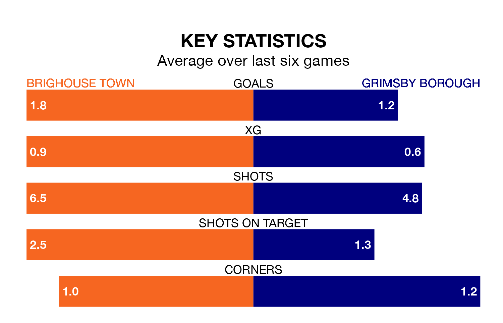

Grimsby Borough visit Brighouse Town on Saturday on the back of four consecutive wins in the Northern Premier League Division One East.
Grimsby have picked up 13 points from their last six games, and they face a Brighouse side who lost their last match, and have collected 10 points from the last possible 18.
With 26 goals in 21 games so far this season, Grimsby are scoring at below the league average rate with 1.2 goals per game. But they are conceding fewer than average too, letting in 31 goals at a rate of 1.5 per game.
Brighouse, meanwhile, are average scorers, with 1.6 goals per game. They have conceded 2.0 goals per game.
Borough are 14th in the table after 21 games, of which they have won eight and drawn two, earning 26 points.
Town are two places ahead of the visitors in 12th, with seven wins and six draws putting them on 27 points.
Brighouse's last match was on January 6, a 3-1 loss against Grantham Town, with getting the goal for Brighouse.
Grimsby beat North Ferriby 1-0 last time out, on Tuesday, with on the scoresheet.
Updated: 10:50, 10/01/24